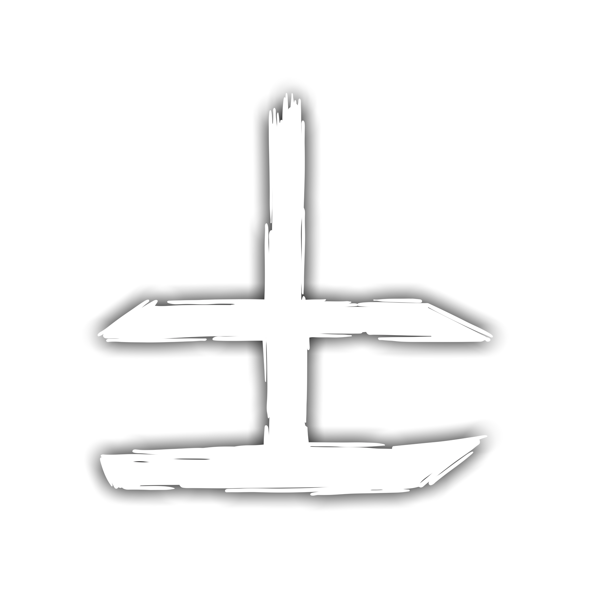
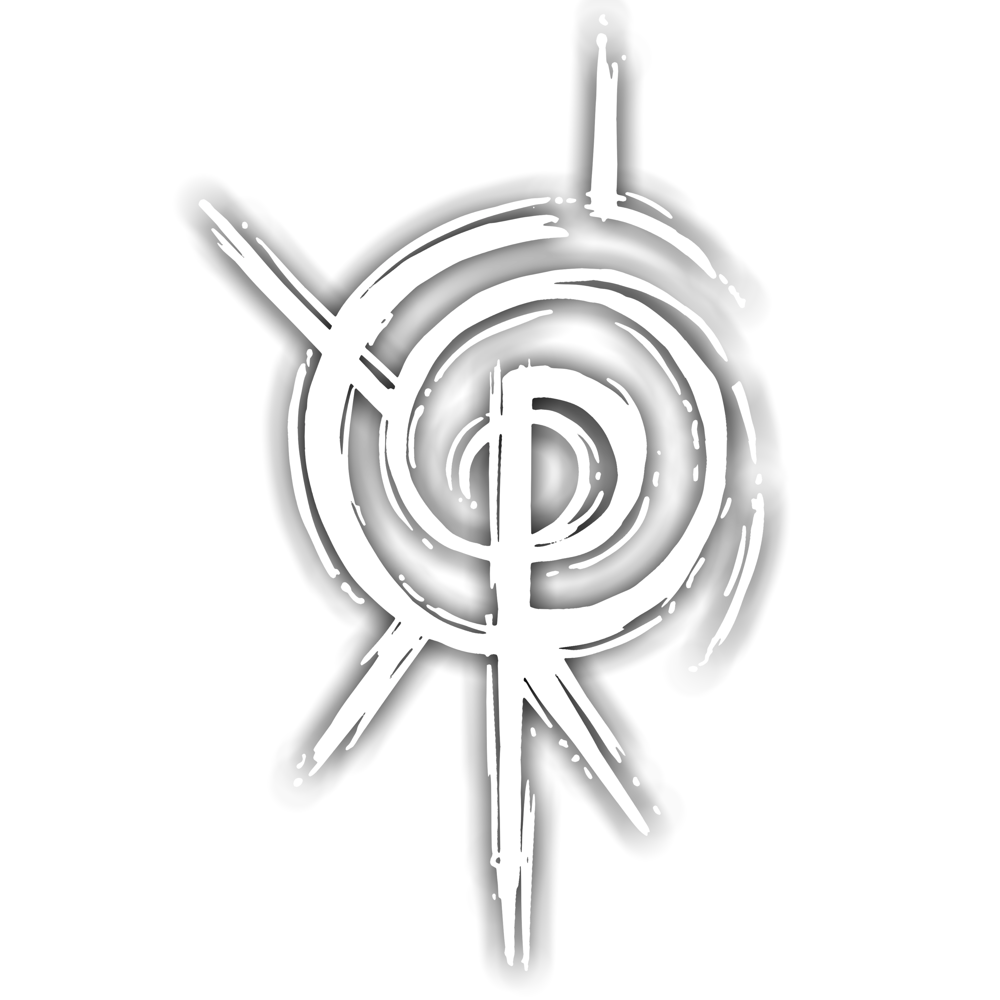
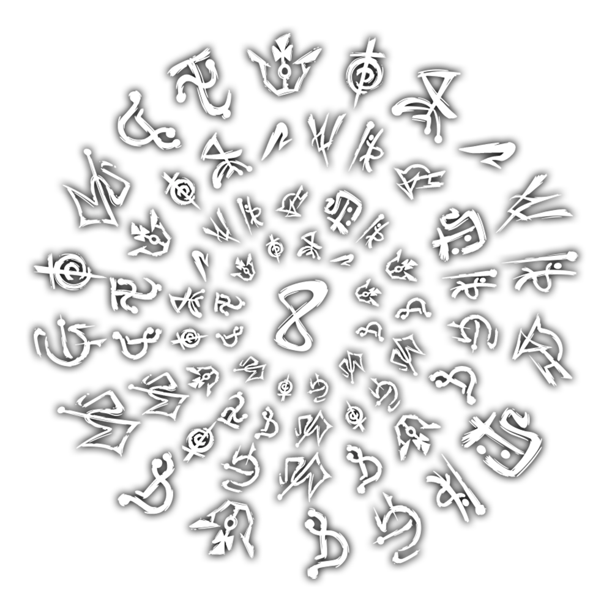

O OUTRO LADO
╬╬═════════❮◆❯═════════╬╬
“Outro Lado é separado da Realidade por uma barreira invisível chamada Membrana. apesar de
forte, a Membrana pode ser danificada, possibilitando que entidades invadam a Realidade,
onde são percebidas como manifestações paranormais"
-o livrode regras
niguem sabe ao certo oque é o outro lado, mas sabemos que lá abitam entidades cujas quais
nossas mentes enlouqueceria apenas de entender e tudo que nos separa dessa dimenção de puro
medo é a...
╬╬══════════════════════════❮◆❯═════════════════════════╬╬
MEMBRANA:
apesar de seu nome sugerir uma barreira solida, a membrana não é um obstaculo fisico, a maneira
mais compreensível de descrevê-la é como uma névoa densa formando um labirinto que separa duas
dimensões — a nossa, regida por leis lógicas, e uma dimensão de insanidade. Enquanto a
Membrana estiver imperturbada, as entidades raramente conseguem invadir a
Realidade.
Porém, a Membrana pode ser enfraquecida: massacres terríveis, rituais macabros ou até mesmo
histórias fictícias como lendas urbanas, filmes de terror e conspirações na internet. Tudo
que gera Medo pode enfraquecer a Membrana.
A Membrana pode ser analisada de duas maneiras: em uma camada universal e em planos
localizados. A camada universal determina a influência da Membrana no mundo todo. Quanto mais
fortalecida a “Membrana universal estiver, mais raras serão as manifestações paranormais em
todos os lugares.
Mas mesmo com a camada universal em boas condições, a Membrana pode ser danificada em lugares
específicos, desde que esses tenham sido uma fonte muito grande de Medo, possibilitando
manifestações extremamente poderosas.
╬╬═════════❮◆❯═════════╬╬
Elementos do Outro Lado
Os Elementos do Outro Lado são uma das principais fundações do Ocultismo. Esses que podem ser
divididos em cinco principais: Sangue, Morte, Conhecimento, Energia e Medo. Cada um desses
elementos possuem propriedades únicas e são responsáveis por definir as características das
materializações do Outro Lado na Realidade.
As Relíquias da Calamidade são a Ponte de cada Elemento do Outro Lado com a Realidade, sendo
responsáveis por permitir que eles se manifestem nela.
╬╬═════════❮◆❯═════════╬╬

Elemento de Sangue:
Ele é o impulso da veemência dos sentimentos das entidades na Realidade.
Esse elemento está relacionado a emoções extremas, como dor, obsessão, paixão, amor, fome e
ódio. As cores que representam o Sangue são tons de vermelho. O Sangue é efetivo contra o
elemento de Conhecimento, porque os sentimentos extremos do Sangue superam a razão e a calmaria
do Conhecimento, enquanto o elemento de Morte é efetivo contra o Sangue, pois a distorção
temporal da Morte arruína a percepção carnal do Sangue.
╬╬═════════❮◆❯═════════╬╬

Elemento de Morte
Ela deve manter a cronologia da Realidade para que todas as histórias tenham um fim.
Esse elemento está relacionado à diversas características como espirais, repetição, Lodo Preto e
distorção temporal, além de distorcer a percepção egóica da existência de cada indivíduo. As
cores que representam esse elemento são preto e tons de cinza. A Morte é efetiva contra o
elemento de Sangue, porque a distorção temporal da Morte arruína a percepção carnal do Sangue,
enquanto o elemento de Energia é efetivo contra a Morte, pois a transformação da Energia
sobrecarrega os efeitos da Morte.
╬╬═════════❮◆❯═════════╬╬
